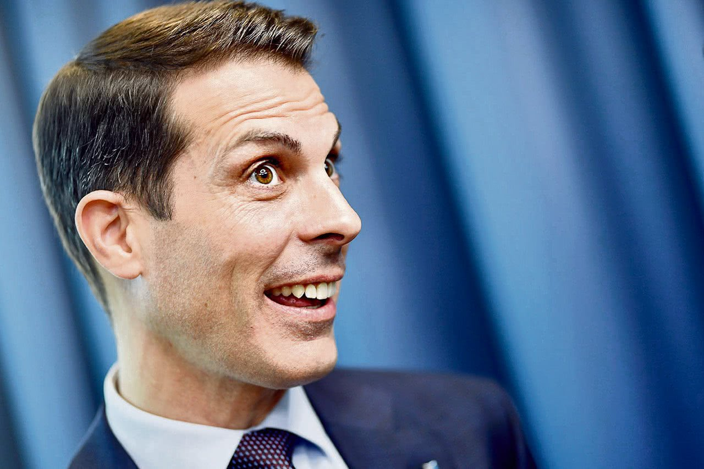

Thierry Burkart
Parteipräsident FDP SchweizSetzt sich für eine liberale Schweiz, Eigenverantwortung und eine starke Wirtschaft ein.

Karin Keller-Sutter
BundesrätinSteht für Stabilität, Sicherheit und eine verantwortungsvolle Finanzpolitik.

Ignazio Cassis
BundesratEngagiert sich für eine offene Aussenpolitik und internationale Zusammenarbeit.

Petra Gössi
Ehem. ParteipräsidentinFördert Innovation, Nachhaltigkeit und die Rolle der Schweiz im globalen Umfeld.